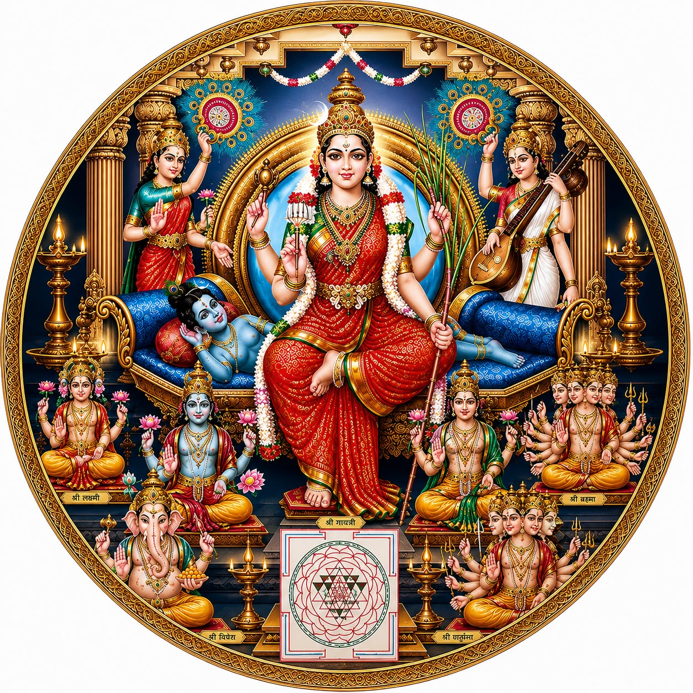
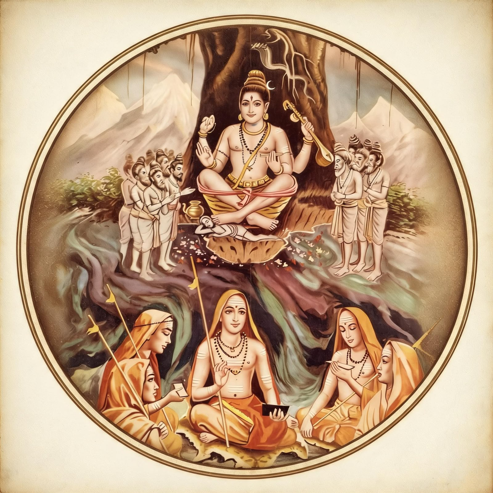
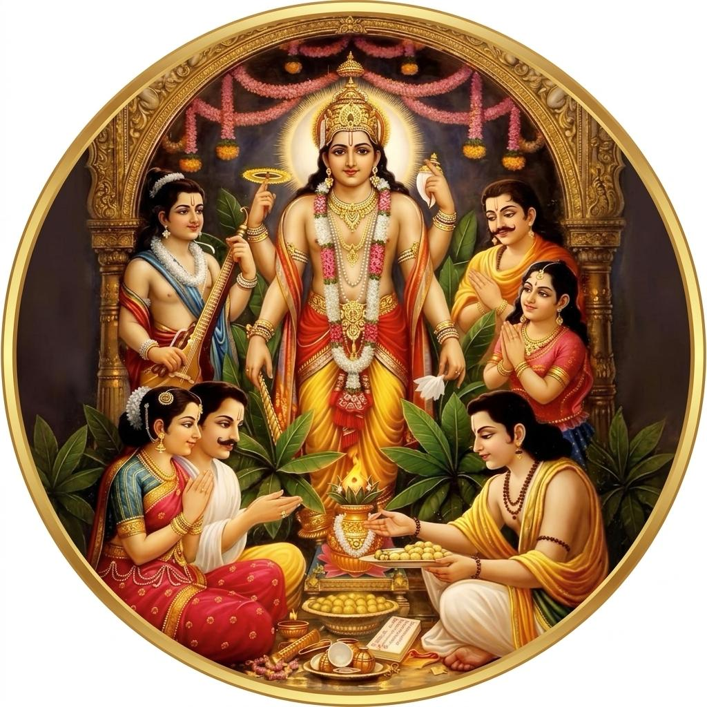

Siddha Astro
Vedic Scriptures
Traditional prayers, stotras, suktas, puja vidhanam and sacred texts.
Books
దేహో దేవాలయః ప్రోక్తో జీవో దేవః సనాతనః । త్యజేదజ్ఞాననిర్మాల్యం సోఽహంభావేన పూజయేత్ ॥
సత్సంగత్వే నిస్సంగత్వం నిస్సంగత్వే నిర్మోహత్వం। నిర్మోహత్వే నిశ్చలతత్వం నిశ్చల తత్వే జీవన్ముక్తి ॥
శ్రవణం కీర్తనం విష్ణోః స్మరణం పాద సేవనం। అర్చనం వందనం దాస్యం సఖ్యమాత్మనివేదనం॥
అలంకార ప్రియో విష్ణుః, అభిషేక ప్రియః శివః। నమస్కార ప్రియో భానుః, బ్రాహ్మణో భోజన ప్రియః॥
దైవాధీనం జగత్ సర్వం మంత్రాధీనం చ దైవతం । తన్మంత్రం బ్రాహ్మణాధీనం బ్రాహ్మణో మమ దైవతం॥
నిత్య విధి(Nitya vidhi)
నిత్య పూజ విధానం (Nitya Pooja vidhanam)
నిత్య పారాయణ/ స్తోత్రాణి(Nitya parayana/stotrani)
గణేశ స్తోత్రం
విష్ణు స్తోత్రం
శివ స్తోత్రం
దేవీ స్తోత్రం

గురు స్తోత్రం

సూక్తాని (suktani)
రుద్రం (Rudram)
శ్రీ సత్యనారాయణ స్వామి వ్రతం (Shri Satyanarayana Swamy Vratam)
